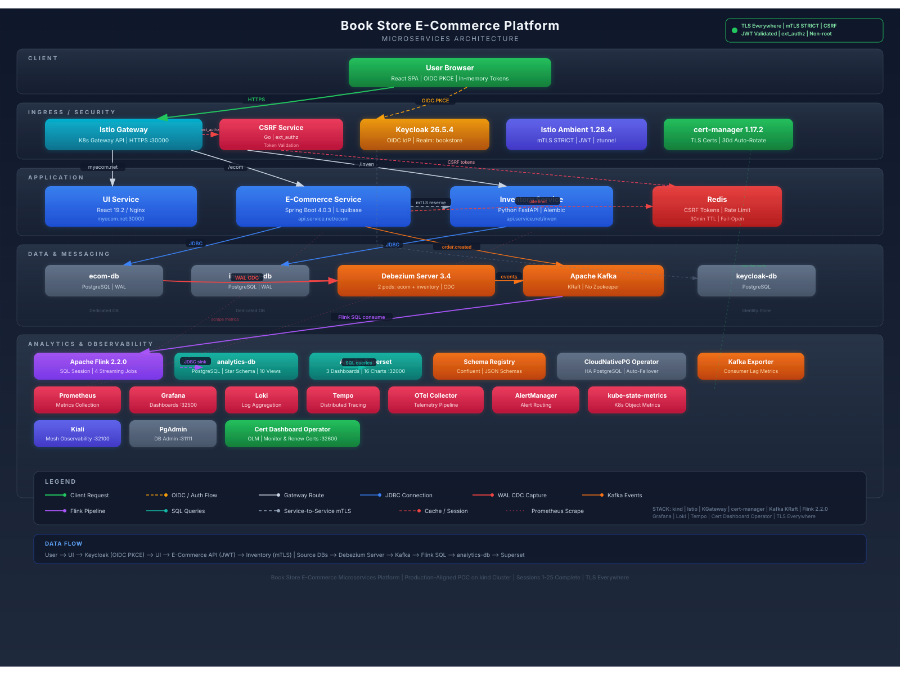
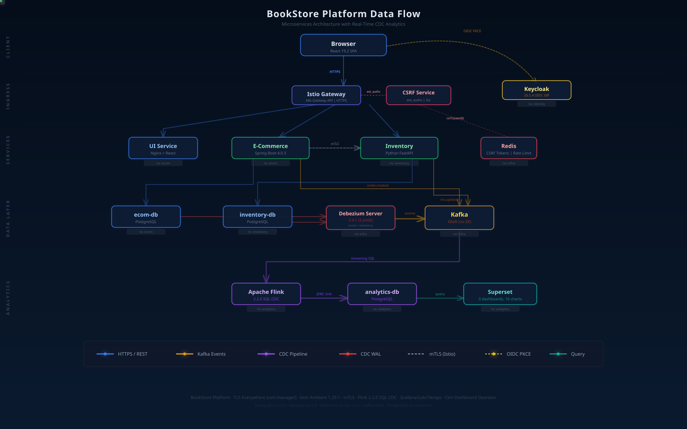

| Layer | Components | Technology |
|---|---|---|
| Client | Single-page application, OIDC login | React 19.2 + Vite, PKCE (S256) |
| Ingress / Security | Gateway routing, TLS termination, mTLS mesh, JWT validation | Istio Ambient 1.29.1, K8s Gateway API, cert-manager 1.17.2 |
| Application Services | E-Commerce API, Inventory API, Admin API | Spring Boot 4.0.3, FastAPI |
| Identity | OIDC provider, RBAC, realm management | Keycloak 26.5.4 |
| Data & Messaging | 4 isolated databases, event streaming, CDC | PostgreSQL, Kafka KRaft, Debezium Server 3.4 |
| Analytics & BI | Stream processing, star schema, dashboards | Flink 2.2.0 SQL, Superset (3 dashboards, 16 charts) |
| Observability | Metrics, tracing, logs, service mesh visualization, DB admin | Prometheus, Grafana, Loki, Tempo, OTel Collector, Kiali, PgAdmin |
| Operations | Certificate monitoring, renewal dashboard, operator lifecycle | Cert Dashboard Operator (OLM), cert-manager 1.17.2 |
All external-facing endpoints serve HTTPS via a self-signed CA managed by cert-manager v1.17.2. A single multi-SAN certificate covers all hostnames. TLS terminates at the Istio Gateway (HTTPS :30000). Certificates auto-rotate every 30 days. HTTP→HTTPS redirect on port 30080 (301).
Istio Ambient Mesh provides mutual TLS across all service-to-service communication without sidecar proxy overhead. ztunnel handles L4 encryption transparently. AuthorizationPolicies operate at L4 only (namespace + SPIFFE principal), compatible with the sidecar-free ambient model. JWT validation occurs independently at every backend service — no service trusts upstream claims.
Keycloak 26.5.4 as OIDC Identity Provider. Authorization Code Flow with PKCE (S256). Tokens stored in memory only — never in localStorage. Back-channel logout via POST (no Keycloak redirect). Role-based access: customer vs admin realm roles.
Two Debezium Server 3.4 pods capture PostgreSQL WAL changes into Kafka topics. Apache Flink 2.2.0 runs four streaming SQL jobs with exactly-once semantics, transforming CDC events into a star schema. Kafka runs in KRaft mode (no Zookeeper).
Strict database-per-service isolation: four PostgreSQL instances with no cross-database access. Schema migrations run as Kubernetes init containers (Liquibase for Java, Alembic for Python). Star schema in analytics-db with fact tables, dimension tables, and 10 views powering Superset dashboards.
RESTful APIs built with Spring Boot 4.0.3 (Java) and FastAPI (Python). Kubernetes Gateway API handles all ingress routing via HTTPRoutes — no Ingress resources. Rate limiting uses Bucket4j backed by Redis. CSRF tokens stored server-side in Redis.
Prometheus scrapes Istio telemetry (istiod + ztunnel) and application metrics. Grafana provides unified dashboards with Loki (logs) and Tempo (traces) backends. OTel Collector routes telemetry from services. Kiali provides real-time service mesh topology visualization. Apache Superset delivers business analytics across three dashboards with 16 charts.
The cert-dashboard-operator is a Go-based Kubernetes operator (OLM-managed) that deploys a web dashboard for monitoring and renewing cert-manager certificates. It displays certificate lifecycle with color-coded progress bars, provides one-click renewal with SSE live streaming, and auto-refreshes every 30 seconds. Accessible at NodePort 32600.

Browser (HTTPS) → Istio Gateway (TLS termination) → UI Service (React SPA)
Browser (HTTPS) → Keycloak (OIDC PKCE login)
UI → E-Commerce API (JWT-protected)
E-Commerce → Inventory Service (service-to-service mTLS)Source DBs → Debezium Server 3.4 → Kafka → Flink 2.2.0 SQL → analytics-db → Supersetorder.created event published to Kafka| Category | Technology | Version |
|---|---|---|
| Frontend | React + Vite | 19.2 |
| Backend (Java) | Spring Boot | 4.0.3 |
| Backend (Python) | FastAPI | latest |
| Identity | Keycloak | 26.5.4 |
| Service Mesh | Istio Ambient | 1.29.1 |
| Gateway | Kubernetes Gateway API | istio |
| Databases | PostgreSQL | 4 instances |
| Messaging | Apache Kafka | KRaft mode |
| CDC | Debezium Server | 3.4.1 |
| Stream Processing | Apache Flink | 2.2.0 |
| BI / Analytics | Apache Superset | latest |
| Certificate Management | cert-manager | 1.17.2 |
| Observability | Prometheus, Grafana, Loki, Tempo, Kiali | — |
| Telemetry Pipeline | OpenTelemetry Collector | — |
| Cert Operations | Cert Dashboard Operator (Go, OLM) | v0.0.1 |
| Cache / Sessions | Redis | — |
| E2E Testing | Playwright | latest |
| Container Orchestration | Kubernetes (kind) | — |
Get the full platform running on macOS or Linux in under 30 minutes. Prerequisites, one-command bootstrap, verification, port map, credentials, and troubleshooting — all in one page.
Production deployment on AWS: EKS, Aurora PostgreSQL, MSK Kafka, ElastiCache Redis, ACM/Route53, ALB ingress. Complete Terraform code with S3 remote state, step-by-step explanations, and one-command teardown.
Production deployment on Azure: AKS, PostgreSQL Flexible Server, Event Hubs (Kafka), Azure Cache for Redis, Key Vault, App Gateway. Complete Terraform code with Blob Storage remote state and managed identities.
Production-grade High Availability across 3 Availability Zones: NAT Gateway per AZ, Aurora Multi-AZ failover, MSK 3-broker quorum, Redis replication group, Pod topology spread, PDB, HPA. Failure scenarios with RPO/RTO targets.
Zone-redundant HA on Azure: AKS across 3 zones, PostgreSQL Flexible Server ZoneRedundant HA, Event Hubs zone-redundant, Redis Premium with zone spread, App Gateway v2 zones. Failure scenarios, cost analysis, compliance checklist.
Side-by-side visual guide: each architecture component shown as an SVG diagram paired with its exact Terraform code. 18 components from VPC to observability, each with purpose, connections, and local-to-cloud mapping.
Side-by-side visual guide: each AKS architecture component shown as an SVG diagram with corresponding Terraform code. 20 components from VNet to observability, with purpose and local-to-cloud mapping.
34-section deep dive: VPC, Subnets, NAT, Security Groups, EKS Control Plane, Worker Nodes, IRSA, Aurora, MSK, Redis, ALB, WAF, Route53, ACM, IAM, Istio. Every component explained with diagrams, analogies, Terraform code, cost, and common mistakes.
32-section deep dive: VNet, Subnets, NSGs, Private Endpoints, AKS Control Plane, Node Pools, Azure CNI, Workload Identity, PostgreSQL Flexible, Event Hubs, Redis, App Gateway, Key Vault, Managed Identity. Plus AWS-vs-Azure comparison table.
Fine-grained Security Groups for every component (ALB, EKS, Aurora, MSK, Redis), NACLs, VPC Flow Logs, VPC Endpoints, encryption. Plus cost optimization: Spot instances (60-90% savings), Graviton ARM, right-sizing, Savings Plans. 60+ item checklist.
Fine-grained NSG rules for every subnet, Private Endpoints for all PaaS (public access disabled), Azure Policy enforcement, disk encryption (CMK). Cost optimization: Spot pools, AMD VMs, Burstable for dev, stop/start automation, Reserved Instances. 60+ item checklist.
15 side-by-side comparisons with inline SVG diagrams: insecure SG egress vs locked-down, no NACLs vs 3-tier defense, On-Demand vs Spot+Graviton. Each shows BEFORE code/diagram (red) vs AFTER code/diagram (green) with attack prevented or cost saved.
15 side-by-side comparisons: default NSG vs explicit deny-all, public endpoints vs Private Endpoints, Intel On-Demand vs AMD Spot, Premium Redis vs Standard, no Policy vs 5 Gatekeeper policies. Visual proof of every security and cost improvement.
Complete 13-chapter professional manual — platform overview, user guide, admin panel, analytics, monitoring, security architecture, API reference, operations, and troubleshooting. All in one document.
Focused step-by-step walkthrough with screenshots and credentials for each dashboard and interface.
Full analysis of all 35 sessions — why each enhancement produces the best outcome, with detailed before/after comparisons and architecture quality scorecard.
Security layers, reliability, resiliency, observability, 15-Factor App compliance, and architecture scorecard.
High availability, automatic failover, Debezium CDC from WAL, Kafka offset storage, and AWS RDS/Aurora migration guide.
Production-grade CDC improvements: Flink restart resilience, Kafka idempotency, consumer lag monitoring, Prometheus metrics, and alert rules.
Confluent Schema Registry with JSON Schemas for all 6 CDC and application Kafka topics. Versioning, BACKWARD compatibility, and manual testing guide.
Security, resilience, and observability hardening. Circuit breaker, rate limiting, DLQ, HPA, PDB, JWT audience, NetworkPolicies, and 55 new E2E tests.
Kafka/Redis production configs, ResourceQuota, checkout idempotency, Swagger disable, backup/restore, developer documentation.
Centralized CSRF protection via Go microservice + Istio ext_authz. Protects ALL backend services (Java, Python, future Node.js) from a single gateway-level enforcement point. 8 implementation challenges documented with fixes.
Redis-backed CSRF token implementation at the Spring Boot application level. CsrfValidationFilter, CsrfTokenService, auto-retry on expiry, fail-open design, and 11-step manual testing guide.
Gap analysis with 15 findings across security, resilience, observability, and Kubernetes. 3 critical, 6 high, 6 medium issues with code-level remediation.
All 15 audit findings resolved. Graceful shutdown, Prometheus metrics, timing-safe comparison, 2-replica HA with HPA/PDB, 19 unit tests, 33 E2E tests. Before/after code for every fix.
From 290-line monolith to clean architecture. Go import system tutorial, dependency injection, interface pattern, internal packages. A learning resource for Go beginners with line-by-line code explanations.
Deep comparison: ext_authz Go microservice (8.8/10) vs Istio Wasm plugin (6.3/10). Security, resilience, traffic handling, maintenance, Redis integration, industry patterns, and weighted scorecard.
18 Python snippets across 8 shell scripts. Side-by-side analysis of each: what it does, what it produces, and why Python instead of bash. 5 reusable patterns for JSON/YAML/token manipulation.
Root cause analysis: AuthorizationPolicy + NetworkPolicy blocked admin-tools namespace. 5 wrong theories investigated, 1 breakthrough via Debezium comparison, systematic fix for all 4 databases.
Impact assessment of adding admin-tools to database access policies. Threat model, double encryption (ztunnel mTLS + PostgreSQL TLS 1.3), SCRAM-SHA-256 auth, 5 production recommendations.
Step-by-step: ServiceEntry, DestinationRule, AuthorizationPolicy, NetworkPolicy for connecting to AWS Aurora PostgreSQL from Istio Ambient mTLS. Troubleshooting table and checklist.
Source code, infrastructure manifests, E2E tests, and CI/CD pipelines for the BookStore platform.
Concise architecture overview covering microservices, data flow, security model, and deployment topology.